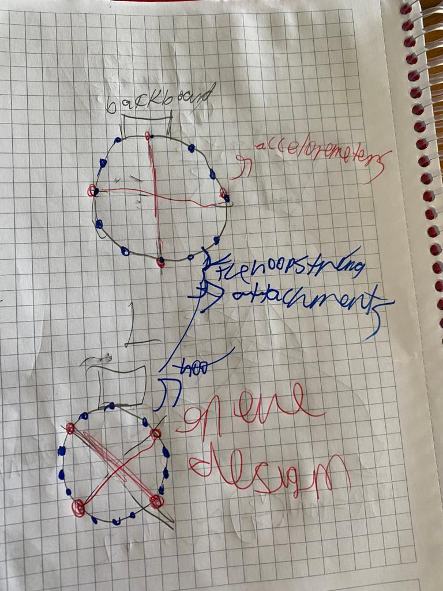
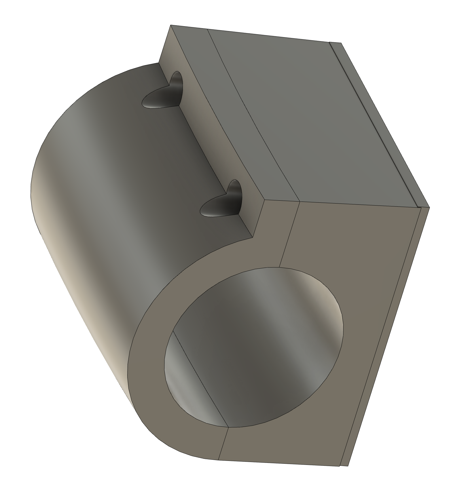
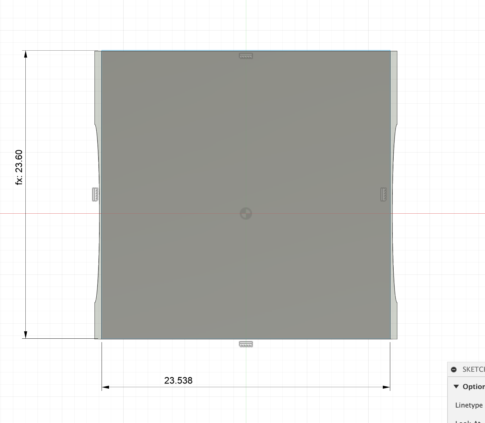
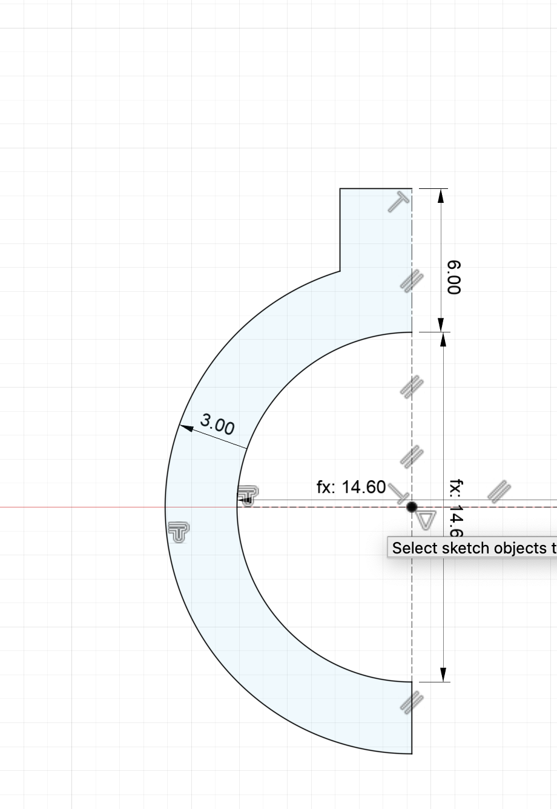
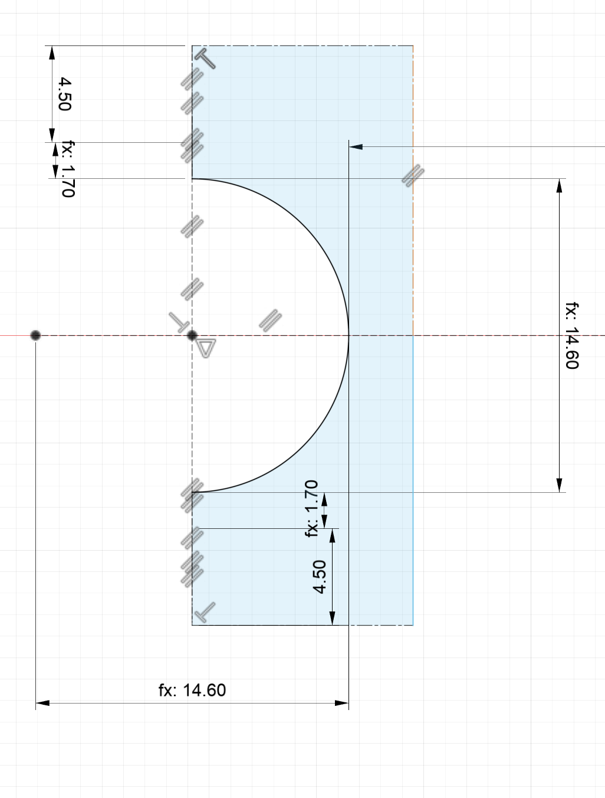
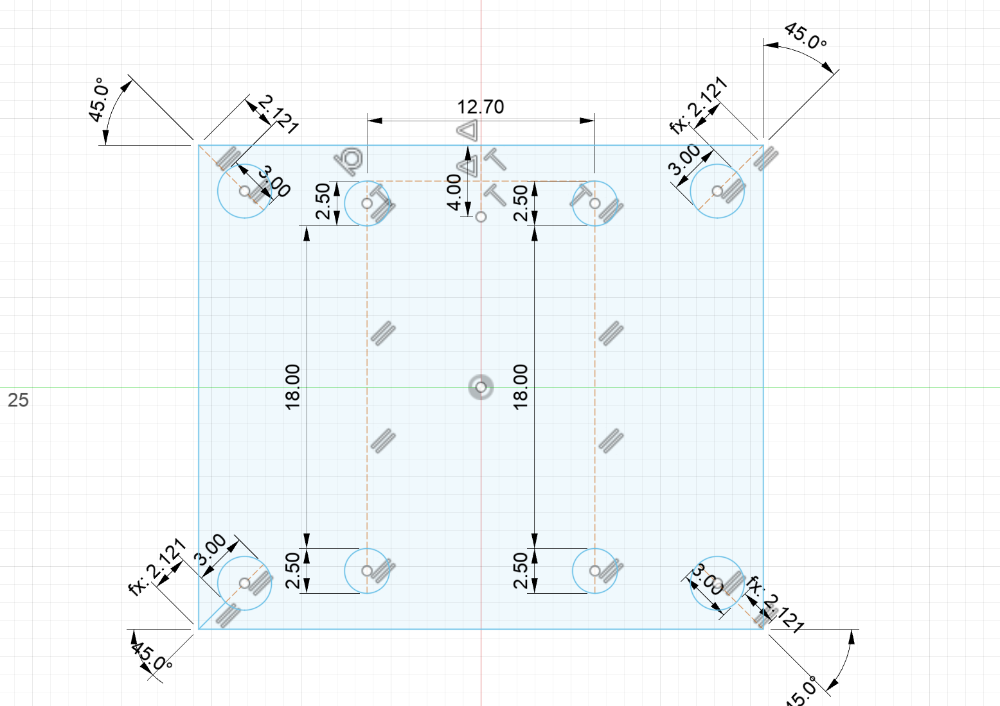
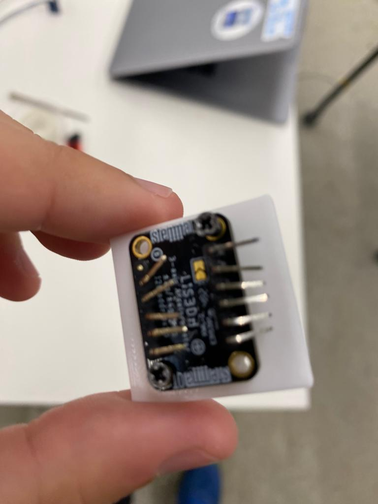
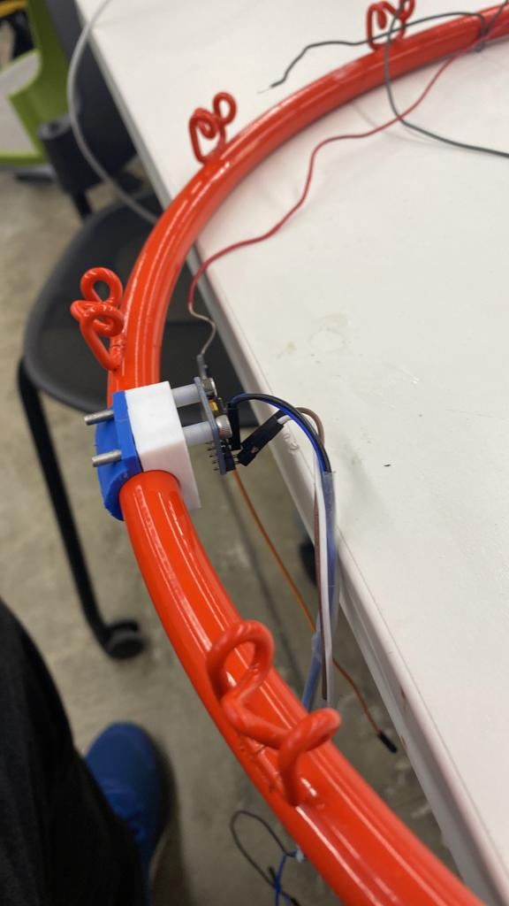

Overall Design
Cad-ing
Problems we Ran Into
Coding
Improvements
To start our project we needed to decide a way to detect where to ball hit on the hoop. I first thought of using some strain gauges but Nathan suggested us to use
acceloremeter's so we decided to use 4 accelerometer to detect where the ball hit on the rim. We also thought of using a light sensor for wheather the ball actually went in or not.
However we couldn't implement these because of the problems we faced with the acceloremeters. Having 4 accelerometer's was the main decision that determined the rest of
the decision for the project. The question after deciding to use 4 acceloremeters was that how to actually do it and it seems harder than it catches the eye. We
first though of using 4 MPU6050's however they cominucate with I2C and you can have only 2 MPU6050's connected to the ESP32 at once(because of I2C adress limitations).
Because of this we decided to use 2 MPU6050 and 2 LIS3H accelormeter's so that we didn't have to do fancy things with I2C adres's. Also we wanted to put
acceloremeters evenly spaced out.
Placement of Accelerometer's and Cad-ing
Overall Design
Problems we Ran Into
Coding
Improvements
We originally wanted to put 1 accelormeters near backbaord 2 in the middle and 1 far, and we acheived this by putting them by attaching them by tape. However
this resulted a little of angled axis's and readings from acceloremets. I wanted them to be not angled at all that's why I needed to attach them by 3--sprinbted pieces. However
to the attachments for the string of the hoop around the places I wanted to put, we've dicded to put the acceloremeters in 45° offset position. Here's a photo explaining this

After this I choose to put a piece that wraps some part of the rim and then attach the accelorometer's into by bolts. This would ensure that the axis's are in right angles to the ground.
Here's an example of these compenents(to put them in the hoop I had to cad the piece in 2 and print of them).

The rim is just a 14.6mm diameter circles rapped around in a bigger circle. In my design I just cad-ed a half circle with 14.6mm diameter and did partial
revolve's to make these pieces. I wrapped my pieces around the y-axis so in my design my pieces are the radis of hoop away from the origin. Here a couple of Sketch photos

The 228.5 represents the hoop radius and it's the distance beetween inside the hop. I first create a circle with 14.6mm diamater then offset it by 3mmm.
However MPU uses 3M bolts so I modified the upper part to be 6mm away so that I can place M3 bolts and leave 1.5mm from both sides. I wanted the inner side to flat-ish
(it won't be flat due to revolve) so that the MPU can easily fit in there. I made a 6° revolve for my piece.
Because of the revolve the inner side is curved and a flat syrface is needed to place the MPU. To make this I tried to sketch a rectangle that matched the height and the width
of the inner part and extrude 1mm towards inner part of hoop and joine dwith the piece. This allowed me easily make holes for the M3 bolts and cut through the 2 bodies

Here's the design for the pieces that's on the outer part of the rim. I again this a 3mm offset then extended the top for 3mm so that I can put M3 bolts.
These bolts also hold 2 pieces togetehr
The distance beetween the holes for the M3 bolts had to match that of the MPU so that I could tightly attach MPU in. Altough I had found the CAD of the MPU online
I wanted to be sure that I got the distance beetween 2MPU's right. So I cade-ed a rectangle with 2 holes that are 12.5mm apart by the closest point. Then I extruded it for 3mm
and tested with an actual MPU(it obviously worked) then I cut these holes from the CAD design's and printed of 2 of each pieces(outer and inner).
I had a similar design for LISD3H as well but it had holes for M2.5 bolts and the M2.5 were'nt enough to attach the LIS3Dh to the piece and also connect 2 pieces,
so for the pieces for I drilled 8 holes, 4 M2.5 to attach the LIS3DH and 4 M3 bolts to connect the inner and outer pieces. Here the CAD-design for LISD3H attachment.

Here's the sketch for the inner LIS3DH part. Like MPU I extrude a rectangle 1mm to make flat surface. To have space for both M2.5's and M3's I did a 8° revolve.
Here's the sketch for the outer LISD3H attachment.

Here's the sketch for the holes on the flat face. The distance beetween the 2.5 holes has been tested by a test piece.
Also I wanted M3 holes to be 1.5mm from both sides that's why you see 2.12mm and 45°.
While placing the MPU, there were 2 holes on the upper side but none on the lover side. Also the pins stuck a little out from
the bottom which made it tilted to fix these I used some spacer's which solved the problem. I didn't had the some problem with LIS3Dh as
it had 4 placement holes. Here are some photos from putting them to the hoop.

Here's the sketch for the inner LIS3DH part. Like MPU I extrude a rectangle 1mm to make flat surface. To have space for both M2.5's and M3's I did a 8° revolve.

Here's attachment of one of the MPU'S

Here's a photo of all sensor's fully put. We put some tape around them so they stayed in fix places and didn't move around
Electronics and The Problems we ran into
Overall Design
Cad-ing
Coding
Improvements
I2C is easy and hard to use. If you have multiple I2C devices with different I2C devices you don't have to do anything fancy on your code. However
if you have multiple I2C devices with the same adress you simply can't use them. Luckliy MPU and LIS3DH comes with solutons. They have a special
that when given voltage changes the I2C adress by 1. so and I2C adress of 0x68 become s0c69(this is for MPU). However if you want to beyond
2 it's again a problem and there's isn't that easy fix for us. So we decided use 2 MPU2s 2 LISDH3's together which worked easily. Firstly I had to find
the part in the example codes that decided the I2C adress, it was in the begin() functions for both of them so I've chnaged them did some test's and it worked.
For wiring wise to simplify to process, I put power,GND,SCL and SDA pins into one of them long places int he breadboard and attached the MPU's to these lines.
Here's an example sketch with 2 acceloremeters.
 On Wednesday when I integrated the LED withe system I just put them pin4 and pin15(coding LED's was Demir's job so I won't mention it here).
On Wednesday when I integrated the LED withe system I just put them pin4 and pin15(coding LED's was Demir's job so I won't mention it here).
When I was testing I qu,ickly realized that to get accurate readings from the sensor's we had to put them an the hoop and attach that hoop to a fixed place.
That take till the end of Tuesday and we started testing. During testing we quickly realized that a light touch from far away and a hard touch close by give
near-identical result's also, it near imposible whetahwr the ball touched left or right of the hoop and we could easily distinguish hits that were
really close to the hoop and really far away from the hoop. Because of this we had to scrap our original idea of finding 12 sections and decided to do the
basic protype of detectşbg whetaher the ball hit close or far away. Also unlike our thoughts, the sensor'd gave warying results with how far they were away from the hoop.
Because 1 sensor data was enough our code works by just reading from 1 sensor. That's why I'm not including the code for reading 4 sensor and only putting the code for
the far MPU we used to do our calculations.
Coding
Overall Design
Cad-ing
Problems we Ran Into
Improvements
For the Code section I was responsible for detecting where the ball hit and Demir was responsible for writing me functions to set the LED's and a function
that light the led1 when the paramter is 1, light the led2 when the parameter is 2 and shut all LED's for any other parameter. He sended me the code file
however my computer refused to open it so I wrote my own near-identical code. Since I didn't do codinf for LED'S I'm not going to talk about.
After outing the accelormeter's into the backboard we hit different part's of the rim see how we were getting the data. The patern we saw was that
after a hit the rim shaked for a second we would get slowly diminishing wave's of data until it reaches it's regular values. At the start of the program
ESP32 start's communication with MPU, then take's an average of 50 reading 15 micro-seconds aparts and decides that value it's regular value.
Then by the loop update() is called which take's reading and determines whetaher it was close hit, far hit, or not hit at all. If it's not a hit,
it read's data again in the next update() call if it's a hit, it reads sensor 3 more times(when a hit occurs far, the first 2 reading may be in the range of
close because the acceleration is still increasing) if there's at least 1 far reading it changes it's status to far, if not it's status is close(for light
close hits the status changes to no hit because the vibrations aren't that frequent). Then it doesn't read for 2 seconds then start's it's cycle again.
in the loop after the update, the code get's it's tstaus and calls the LED light function accordingly(so basically the LED function is called constantly,
I could've wrote a code that called only when there was change on the status but I had so few of a time to not deal with it) The communication start with MPU and getting
readings from it are done by from copying the Adarfuit's basic-reading tutorial code int he arduino.
In my code I have function that takes a reading and if the reading is in absolute 3.5 difference from the regular value, returns the standard value, and if it's
out of that difference returns the actual value. Based on the value of this, a function returns the where the ball hit(if the valu is regular- no hit,
if the difference is less then 40-> close to the backboard, anything above is far). Also a function called get_state that rreturns the state instance variable to the loop function.
String give_state()
{
double value=get_if_abnormal();
String state;
double dif=abs(value-regular_val);
if(dif<0.1)// doign abs vecauyse floating point imprecision
{
state="no hit";
}
else if(dif< 40)
{
state="close to the backboard";
}
else
{
state="far from backboard";
}
return state;
}
double get_reading()//I got this from the example code
{
sensors_event_t a, g, temp;
mpu.getEvent(&a, &g, &temp);
return a.acceleration.x ;
}
The way my update function work's is that it start's as in a condition of "no hit". If it's in no-hit, it get's the state
determines if it's a hit, it changes the variables to notify the program that now it's in a hit state. AFter these it updates millis.
If it's in a hit state the code checks if the time of last is less then 2 seconds or not if it^s more than 2 secon ds it goes back to no-hit state.
In the hit state it looks at how many reading it has if it's less than 4 it takes a readng and if the state variable is not far(it updates it's state
(if the state is already far it stays far, if the state is close to the board it reads again so that we don't miss a far shot.)
void update()
{
long cur_time=millis();
if(!has_hit)
{
String stat=give_state();
if (! stat.equals("no hit"))
{
has_hit=true;
cur_state=stat;
num_read+=1;
}
else
{
cur_state=stat;
}
last_no_hit=millis();
}
else if(cur_time-last_no_hit<2000)//during hit faze
{
if(num_read < num_read_for_far)
{
num_read+=1;
if(cur_state.equals("close to the backboard"))
{
cur_state=give_state();
}
}
}
else if(cur_time-last_no_hit>2000)
{
has_hit=false;
num_read=0;
}
}
I have a function that takes average of 50 readings but it's just a basic for loop so I'm not putting it. Here's the constructor of the class. Also
I'm not putting the code for the communication's because it's too long and same as the Adafruit's example code.
class MPU6050
{
const static int off_time=2000;
const static int num_read_for_far=4;// the first couple might be close
public:
Adafruit_MPU6050 mpu;
int overall_offset;
uint8_t I2C_adress;
double regular_val;
double cut_off_limit;
long last_no_hit;
boolean has_hit;
int num_read=0;
String cur_state;
MPU6050( uint8_t I2C, double off_lim)
{
I2C_adress=I2C;
cut_off_limit=off_lim;
regular_val=0;
last_no_hit=0;
has_hit=false;
num_read=0;
cur_state="no hit";
}
In the set-up I set the mpu and LED up. on the Loop I upodate the MPU and get it's current state.
Convert the state into an integer and light the LED2s accordingly.
MPU6050 mpu1( 0x68,3.5);
int led1=4;
int led2=15;
void setup() {
Serial.begin(115200);
set_leds();
mpu1.set_MPU6050();
}
void loop() {
mpu1.update();
String stat=mpu1.get_state();
Serial.println(stat);
int num=input_to_led(stat);
light_led(num);
}
int input_to_led(String s)
{
int val=0;
if(s.equals("no hit"))
{
val=0;
}
else if(s.equals("close to the backboard"))
{
val=1;
}
else
{
val=2;
}
return val;
}
İmprovement for Future Design
Overall Design
Cad-ing
Problems we Ran Into
Coding
There are many major and tiny improvement's we can make to the design. As a person who likes to write efficient,
modular, easy readible codes, I can say a lot of about nuances about my code but won't say it. The major problem we had
is that acceloremeters are not suited for a thing we're doing. Instead of that we could've put 12 capacitive touch sensor around
the hoop and easily attach 12 LED's to it, it probably isn't as simple as light the LED for the sensor that's high, but simpler than dealing
with oscilations. Besides that if had just put accelormeter's in tested with the hoop way before we could've found our mistake and change
but because we found 1 day before Thursday it was too late.